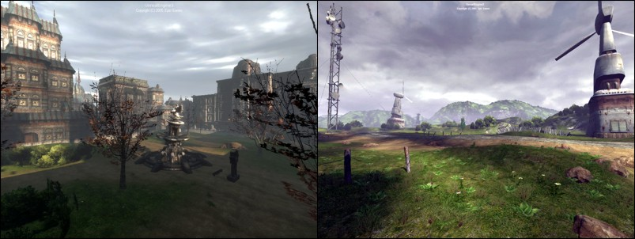
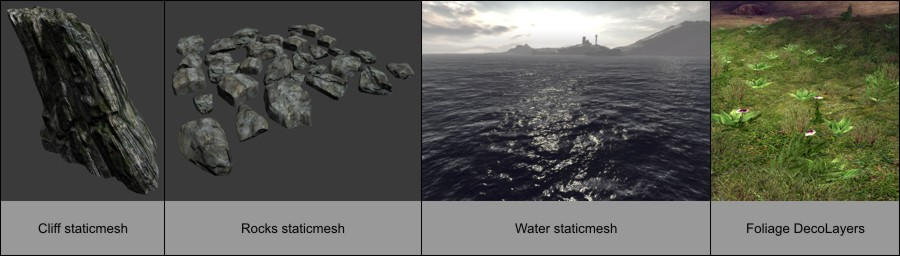
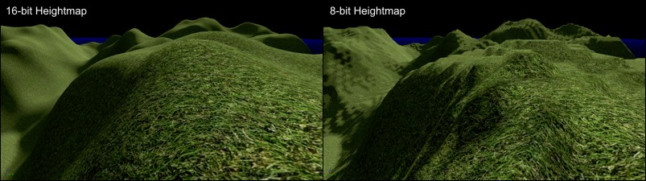
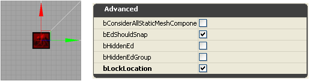
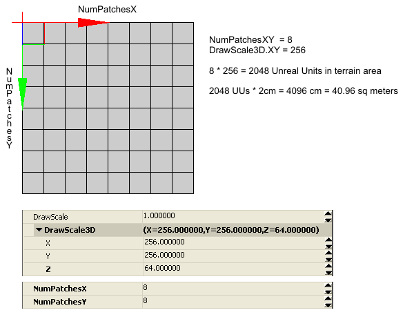
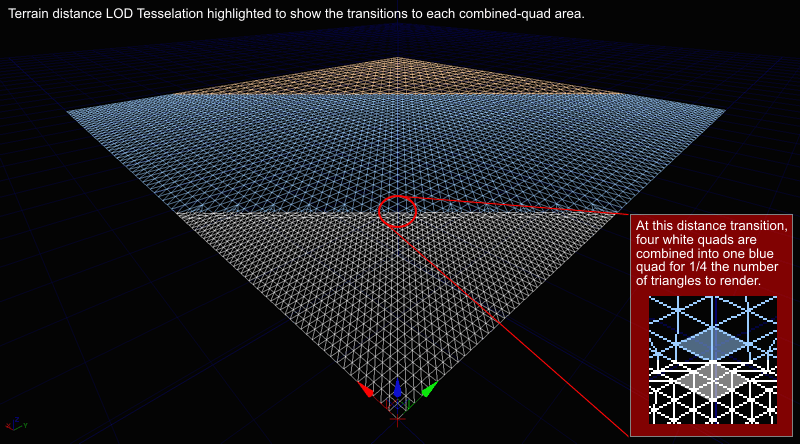
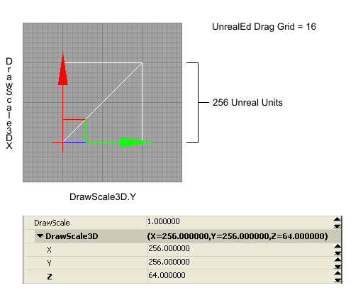
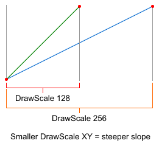
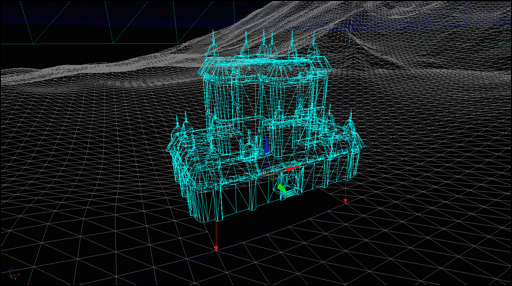
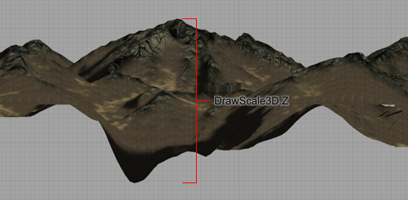

Terrain Design: Guidelines and Information
Overview
Unreal Engine 3 supports a flexible terrain system that provides a wide variety of visual styles and uses. Many different landscapes can be realized and various themes can be achieved utilizing a heightmap based system that can visually depict hills, valleys, mountains, rivers, roads, and more, plus a multi-layer Terrain Material system that supports real-world texture files such as dirt, rock, sand and mud. A multi-layer Decoration system provides additional flexibility and realism by rendering foliage such as grass, weeds, bushes and flowers, and even small rocks and debri.

Terrain Creation
Terrain is typically created using one of two techniques: hand-painting directly on the terrain mesh to create the hills and valleys; or importing externally created terrain heightmaps. Additionally, heightmap information can be acquired from DEMs - Digital Elevation Model information. Material layers that represent dirt, grass and rock can be created using terrain alphamaps that determine where the texture is blended onto the terrain.
Terrain Use and Map Layout
Terrain can be used for small areas such as city lots, enclosed courtyards and even to simulate piles of debris; or the entire game map may be based on a large outdoor terrain design that incorporates a variety of geological features such as mountains and valleys.
The terrain is often used in conjunction with specifically-designed geological meshes for large boulders, buttes, cliffs, and even water planes. Additional meshes are also used for the various foliage that may appear on the terrain. Map designs and layouts using terrain for video games will often utilize the terrain's ability to create impassable mountains or cliffs around the circumference of the play area, in order to restrict the movement of the game player and prevent them from leaving or falling off of the game map "world".
The terrain system essentially renders an X*Y array of mesh triangles whose vertex Z value determines the altitude of the triangles at each grid intersection. One of the challenges that level designers face is choosing the appropriate layout and resolution of this terrain mesh in order to provide the best visual quality versus performance setting.

Terrain Size
Unreal Engine 3 supports a maximum world size of 512k x 512k (524288 x 524288) Unreal Units. This is equivalent to approximately 10 kilometers squared of area using the default engine unit conversion of 1 UU = 2 cm (10km x 10km). The actual size of the game play area is usually much less than this, often less than 1 square kilometer for outdoor terrain-based maps. Note that geometry, such as sky spheres, placed outside of the maximum world size will still render, but "world" geometry is limited to this total available area.
The terrain heightmap XY resolution as set by the Terrain.NumPatches, ie. 128x128 or 256x256, and the Display.DrawScale which specifies the size of each terrain patch, ultimately determine the total area of the final terrain mesh. Choosing the most effective set of values for patch size and number of patches is required to obtain the best balance between terrain detail and rendering performance.
It is not recommended to create a terrain larger than 1024x1024 patches for both performance and file size reasons. For example, a 2048x2048 terrain, which is 8 million triangles, is slow to work with in the editor and results in a very large map file size. In most cases even exceeding a 512x512 terrain can lead into certain technical issues, and the map design should be examined and possibly re-evaluated as to whether using such a large terrain is a proper choice.
Heightmap Bit-Depth
When developing maps with external heightmap files for importing into the Unreal Engine terrain system, always work with the proper 16-bit heightmap format and files. Choosing to work with 8-bit grayscale heightmap files for ease of support in standard paint software results in terrains that are using only 1/256th of the available altitude range. This normally causes an undesirable stair-stepped terracing look to the terrain.
When working with external heightmap files, it is not recommended to attempt to paint detail on the heightmap using standard paint software, as it can only edit and display 8-bits of grayscale on current video hardware. This means that for every single color of gray that is painted on an 8-bit display system, there are actually 256 levels of altitude that cannot be shown visually. In other words, on an 8-bit grayscale display, the value 0 (black) is actually the 16-bit values from 0 to 255, 1 is 256 to 511, etc. So there is no visual accuracy to the values that you are painting to.

Staying on Grid
The Terrain actor's Advanced.bEdShouldSnap property should always remain checked (true) so that the terrain patches remain on-grid. This in combination with using a power-of-two Display.DrawScale and Display.DrawScale3D.X/.Y results in patches that properly fit onto the grid on all edges.
Once the Terrain actor has been moved into place in the map, be sure to set the Advanced.bLockLocation to checked (true) to lock the Terrain actor and prevent its accidental movement in the editor.

The Power-of-Two
Often when working with terrain and other game assets, the phrase "power-of-two" will come up. Power-of-two numbers are those that are calculated from the formula 2^n where n is any number from 0 and greater. So 2^0 = 1. 2^1 = 2. 2^2 = 4. 2^3 = 8. 2^4 = 16. etc. Common power-of-two values used for terrain include 1, 2, 4, 8, 16, 32, 64, 128, 256, 512, 1024.
Number of Patches
The Terrain actor supports a user-definable number of mesh patches (quads), as specified by the Terrain Properties for Terrain.NumPatchesX and Terrain.NumPatchesY. These two properties specify the number of patches for the X and Y dimensions of the terrain mesh.
The number of patches is multiplied by the terrain DrawScale to determine the total area that the terrain mesh will cover in the editor.

The specific values that are supported for the NumPatches properties varies depending on the Terrain.MaxTesselationLevel and Terrain.MinTesselationLevel values. For example, whether NumPatches can be 40 or 85 or even 255 or 256 varies by the TesselationLevel value.
If the MaxTesselationLevel and MinTesselationLevel properties are both set to 1, then any arbitrary terrain size between 1 and the maximum supported size can be specified. This will allow for the creation of odd-sized terrains such as 41x79. The drawback to using TesselationLevel values of 1 are that all terrain triangles in the frustum will be rendered without the use of the dynamic distance LOD tesselation optimization system. This may be acceptable for smaller terrain pieces, but for large terrain systems this will have an impact on the rendered framerate of the map.
Note: It is not recommended to create a terrain larger than 1024x1024 patches for both performance and file size reasons. For example, a 2048x2048 terrain which is 8 million triangles, is slow to work with in the editor and results in a very large map file size. In most cases even exceeding a 512x512 terrain can lead into certain technical issues, and the map design should be examined and possibly re-evaluated as to whether using such a large terrain is a proper choice.
The MinTesselationLevel property should normally be set to the default value of 1. If it is set to the same value as the MaxTesselationLevel property, then the result is the same as setting both properties to 1, no tesselation occurs. If the MinTesselationLevel is set to a value such as one half of the MaxTesselationLevel, ie. Min = 2 and Max = 4, then the number of tesselation areas will be less and the further distance terrain will not have increased optimization quads. In other words, a Min:Max of 1:4 results in two optimized distance areas, a Min:Max of 2:4 results in only one optimized distance area.
If the MaxTesselationLevel is set to a value other than 1 to enable the distance LOD optimization system, the values supported by NumPatches is now limited to a multiple of the MaxTesselationLevel value. For example, if MaxTesselationLevel is 4, NumPatches can be 4, 8, 12, 16, 20, 24, ..., etc. If MaxTesselationLevel is 8, NumPatches can be 8, 16, 24, 32, 40, 48, ..., etc. It is highly recommended to use the dynamic distance LOD tesselation optimization, even though this will limit the choice of terrain size to only multiples of the MaxTesselationLevel value.

Draw Scale
Draw Scale X and Y
The size of each terrain patch is determined by the Terrain actor's Display.DrawScale and Display.DrawScale3D properties. These two sets of values are multiplied together to determine the overall terrain patch sizing. In other words, a DrawScale of 1.0 and a DrawScale3D of 256.0 results in patches that are 256 Unreal Units in size (1.0 * 256.0). A DrawScale of 2.0 and a DrawScale3D of 512.0 results in patches that are 1024 Unreal Units in size (2.0 * 512.0). A DrawScale of 0.5 and a DrawScale3D of 128.0 results in patches that are 64 Unreal Units in size (0.5 * 128.0).
The DrawScale property should normally be left at its default value of 1.0, and the DrawScale3D properties should be adjusted to modify the terrain scale for sizes other than the default of 256. The DrawScale3D includes individual properties for each of the X, Y and Z directions of the terrain mesh. X and Y affect the width and length of the terrain mesh, while Z affects the height (altitude range) of the terrain mesh.
To create a terrain of a specific area, such as 1 kilometer square, appropriate values for the number of patches and the draw scale must be chosen. The mathematical formula for this is:
Terrain Area in Unreal Units = ( NumPatchesX * ( DrawScale * DrawScale3D.X )) * ( NumPatchesY * ( DrawScale * DrawScale3D.Y ))
The result will be in Unreal Units which can be converted to standard measurements according to the conversion factor of 1 unreal unit = 2 centimeters. This is the default engine scale size. Different games using the engine may use different conversion scales as set by the developer.
The set of values chosen for DrawScale will depend on two factors, the desired terrain detail quality, and the desired rendering performance. Greater terrain detail requires a smaller DrawScale which results in a greater number of patches for a specified terrain area, while faster rendering requires fewer patches for a specified terrain area which is accomplished with a larger DrawScale.
A good rule-of-thumb is that for small terrain areas, such as an enclosed courtyard, DrawScale3D.X/Y can range from 32 to 128 with the common value of 64. For large terrain areas, such as complete outdoor areas, DrawScale3D.X/Y should be between 128 and 512 with the common value of 256.

Draw Scale Z
The DrawScale3D.Z property determines the granularity for each terrain mesh vertex position along the z direction (up and down). The lower the DrawScale3D.Z value, the finer the altitude steps. The greater the DrawScale3D.Z value, the larger the altitude steps. Since there is also only 65536 altitude values in total, the DrawScale3D.Z also determines the total altitude range for the terrain.
There is additional information on DrawScale3D.Z included below.
Terrain Patch Size Area
The size of each terrain patch (quad) is determined by the Display.DrawScale and Display.DrawScale3D properties. This table shows the approximate size in equivalent feet and meters based on the default Unreal Engine measurement ratio of 1 Unreal Unit equals 2 centimeters. Imperial to metric conversion is 1 inch = 2.54 cm.
| DrawScale | Patch in UUs | Patch in Meters | Patch in Feet |
|---|
| 64 | 64 uus | 1.28m (128cm) | 4.2ft (50.39 in) |
| 80 | 80 uus | 1.60m (160cm) | 5.25ft (62.99 in) |
| 96 | 96 uus | 1.92m (192cm) | 6.3ft (75.59 in) |
| 112 | 112 uus | 2.24m (224cm) | 7.35ft (88.19 in) |
| 128 | 128 uus | 2.56m (256cm) | 8.4ft (100.79 in) |
| 160 | 160 uus | 3.20m (320cm) | 10.5ft (125.98 in) |
| 192 | 192 uus | 3.84m (384cm) | 12.6ft (151.18 in) |
| 224 | 224 uus | 4.48m (448cm) | 14.7ft (176.38 in) |
| 256 | 256 uus | 5.12m (512cm) | 16.8ft (201.57 in) |
| 288 | 288 uus | 5.76m (576cm) | 18.9ft (226.77 in) |
| 320 | 320 uus | 6.40m (640cm) | 21ft (251.97 in) |
| 352 | 352 uus | 7.04m (704cm) | 23.1ft (277.17 in) |
| 384 | 384 uus | 7.68m (768cm) | 25.2ft (302.36 in) |
| 512 | 512 uus | 10.24m (1024cm) | 33.6ft (403.15 in) |
Terrain Size versus Map File Size
The total size of the terrain, the number of texture layers, and other terrain properties such as the lightmap resolution, determines the amount of additional resources added to the map file size. Larger terrains quickly add a significant number of megabytes to a map file.
Below is a list of file sizes for levels set up as follows:
- Empty clean map with Terrain actor and one Directional Light.
- No Terrain Layers.
- Uncooked.
| Heightmap | Triangles | File Size |
|---|
| 64x64 | 8,192 | 125kb |
| 128x128 | 32,768 | 3.2MB |
| 256x256 | 131,072 | 7.2MB |
| 512x512 | 524,288 | 28.7MB |
| 1024x1024 | 2,097,152 | 110MB |
Below is a list of file sizes for levels set up as follows:
- Empty clean map with Terrain actor and one Directional Light.
- One 1024x1024 Texture, one Material, one TerrainMaterial, one TerrainLayerSetup.
- Uncooked.
| Heightmap | Triangles | File Size |
|---|
| 64x64 | 8,192 | 4MB |
| 128x128 | 32,768 | 6.38MB |
| 256x256 | 131,072 | 10.6MB |
| 512x512 | 524,288 | 32.9MB |
| 1024x1024 | 2,097,152 | 118MB |
Terrain Size versus Map Area
This table lists the real-world equivalent size for the terrain for various common values for number of patches and draw scale.
The terrain size is calculated as NumPatches * ( DrawScale * DrawScale3D ) = Unreal Units.
1 Unreal Unit = 2cm. 1 foot = 30.48cm or 0.3048 meters. 1 meter = 3.280839895 feet. 1000 meters = 1 kilometer. 5280 feet = 1 mile.
To determine the total desired area for a terrain, look up the width and length from this table in meters/kilometers or feet/miles to get the required NumPatches and DrawScale.
| NumPatches | DrawScale | Length in Unreal Units | Meters | Feet |
|---|
| 64 | 64 | 4096 uus | 81.92 m | 268.77 ft |
| 64 | 96 | 6144 uus | 122.88 m | 403.15 ft |
| 64 | 128 | 8192 uus | 163.84 m | 537.53 ft |
| 64 | 192 | 12288 uus | 245.76 m | 806.3 ft |
| 64 | 256 | 16384 uus | 327.68 m | 1074.97 ft |
| 64 | 384 | 24576 uus | 491.52 m | 1612.6 ft |
| 64 | 512 | 32768 uus | 655.36 m | 2150.13 ft |
| 128 | 64 | 8192 uus | 163.84 m | 537.53 ft |
| 128 | 96 | 12288 uus | 245.76 m | 806.3 ft |
| 128 | 128 | 16384 uus | 327.68 m | 1074.97 ft |
| 128 | 192 | 24576 uus | 491.52 m | 1612.6 ft |
| 128 | 256 | 32768 uus | 655.36 m | 2150.13 ft |
| 128 | 384 | 49152 uus | 983.04 m | 3225.2 ft |
| 128 | 512 | 65536 uus | 1.3km (1310.72 m) | 4300.26 ft |
| 256 | 64 | 16384 uus | 327.68 m | 1074.97 ft |
| 256 | 96 | 24576 uus | 491.52 m | 1612.6 ft |
| 256 | 128 | 32768 uus | 655.36 m | 2150.13 ft |
| 256 | 192 | 49152 uus | 983.04 m | 3225.2 ft |
| 256 | 256 | 65536 uus | 1.3km (1310.72 m) | 4300.26 ft |
| 256 | 384 | 98304 uus | 1.97km (1966.08 m) | 1.22 miles (6450.39 ft) |
| 256 | 512 | 131072 uus | 2.6km (2621.44 m) | 1.63 miles (8600.52 ft) |
| 512 | 64 | 32768 uus | 655.36 m | 2150.13 ft |
| 512 | 96 | 49152 uus | 983.04 m | 3225.2 ft |
| 512 | 128 | 65536 uus | 1.31km (1310.72 m) | 4300.26 ft |
| 512 | 192 | 98304 uus | 1.97km (1966.08 m) | 1.22 miles (6450.39 ft) |
| 512 | 256 | 131072 uus | 2.62km (2621.44 m) | 1.63 miles (8600.52 ft) |
| 512 | 384 | 196608 uus | 3.93km (3932.16 m) | 2.44 miles (12900.79 ft) |
| 512 | 512 | 262144 uus | 5.24km (5242.88 m) | 3.26 miles (17201.05 ft) |
| 1024 | 64 | 65536 uus | 1.31km (1310.72 m) | 4300.26 ft |
| 1024 | 96 | 98304 uus | 1.97km (1966.08 m) | 1.22 miles (6450.39 ft) |
| 1024 | 128 | 131072 uus | 2.62km (2621.44 m) | 1.63 miles (8600.52 ft) |
| 1024 | 192 | 196608 uus | 3.93km (3932.16 m) | 2.44 miles (12900.79 ft) |
| 1024 | 256 | 262144 uus | 5.24km (5242.88 m) | 3.26 miles (17201.05 ft) |
| 1024 | 384 | 393216 uus | 7.86km (7864.32 m) | 4.89 miles (25801.57 ft) |
| 1024 | 512 | 524288 uus | 10.49km (10485.76 m) | 6.52 miles (34402.1 ft) |
Optimizing Terrain
There are a number of features in the Unreal Engine for optimizing terrain in addition to choosing the best size for the intended purpose.
- Use DrawScale XY values between 256 and 512 and preferably no lower than 128. Values lower than 128 create dense terrain meshes that require a lot of rendering power.
- Make good use of the built-in distance LOD Tesselation feature by setting the Terrain.MinTesselationLevel to 1 and Terrain.MaxTesselationLevel to 4. Disabling the Tesselation feature usually results in more terrain triangles being rendered in the frustum, requiring more rendering power.
- Limit the number of Materials applied to the terrain. The fewer and simpler the Material setup, the faster it will render.
Note that Specular is currently disabled on Terrain Materials for performance reasons. If you are experiencing large color blocks or other similar anomalies after applying a new texture layer or increasing the complexity of an existing terrain material, then the combined terrain material set has too many textures or too many instructions to properly render. Although it is dependant on the video adapter hardware, the common limit is 16 texture samplers. The combined layers on each terrain component should not exceed a total texture count of 16, with 3 used for the lightmaps and at least 1 used for the layer blend map, leaving usually 12 available textures total for the terrain layers. The layer blend maps are packed into the ARGB components of 32-bit texture(s), supporting up to four blend layers per texture. As the number of layers to blend increases, then number of blend maps increases. Be sure to use the "Check map for errors" option to see if there are Map Errors with the combined materials applied to the terrain.
- Hide the terrain triangles that are never visible or are located under other geometry and assets such as CSG brushes or StaticMesh objects. This is accomplished by editing the terrain with the Visibility Tool and clicking on the patches that are to be hidden. The terrain areas that are set hidden must be large enough to have a significant performance increase to be worthwhile, in other words, don't hide one individual patch under each crate or barrel or tree.
Draw Scale XY and Sinking Map Assets
As mentioned previously, the Terrain actor's Advanced.bEdShouldSnap property should always remain checked (true) so that the terrain patches remain on-grid. This in combination with using a power-of-two Display.DrawScale and Display.DrawScale3D.X/.Y results in patches that properly fit onto the grid on all edges. In most cases, terrain patches will be using a square aspect ratio for the X and Y, since any editing for visibility and sinking of assets into the terrain will usually be simplified if each patch quad is square.
Why the Terrain Mesh XY Matters
The terrain DrawScale XY determines the size of each patch in the terrain mesh. This size also determines the maximum slope angle of the terrain patch for a given vertex altitude difference. A smaller DrawScale XY size allows for steeper slopes, which at times may be necessary for terrains that include steep cliffs.

When creating assets such as CSG (Constructive Solid Geometry) and static meshes for use in maps, it is common practice to scale all assets so that they fit onto the power-of-two grid spacing. If the terrain patches are also scaled to be power-of-two in size, then assets such as static mesh buildings that are sunk into the terrain, will cleanly line up with the edges of the terrain patches, and those patches that are not visible inside or underneath of the sunk asset can often be hidden using the Terrain Visibility Tool for a possible performance increase. If the asset has an interior, such as a building, the patches of terrain that are inside of the building will have to be hidden in order that they do not interfere with the player movement inside of the structure.

Draw Scale Z versus Altitude Range
The Display.DrawScale3D.Z property specifies the amount of scaling performed in the Z direction. This determines the overall altitude range that the terrain vertices, and likewise the triangles, can reach. When creating a new terrain, it is advisable to change the DrawScale3D.Z to a lower value than the default of 256. A value in the range of 64 to 128 is recommended.
Why the Z Matters
The DrawScale3D.Z value has a significant importance in two areas, it determines the maximum altitude range that the terrain can extend, and it determines the granularity of the vertex Z locations which is relevant also for painting. Smaller DrawScale Z values allow for finer control on vertex altitudes. For example, referencing the information in the table below, a DrawScale3D.Z value of 2048 results in vertices that can only be adjusted in altitude every 32 cm or approximately 1 foot. If the terrain is to be adjusted around the edges of a building or other inserted asset, a 1 foot movement is more than likely too significant and finer editing control is required.

Altitude Ranges
The following table lists common DrawScale3D.Z values and the equivalent maximum altitude range that it supports from the lowest to highest heightmap value (0 or black is lowest G16 altitude, 65535 or white is highest G16 altitude). Rarely will the DrawScale3D.Z value be greater than 64 in actual use. If an external G16 heightmap file is imported and it requires a DrawScale3D.Z of more than 64 to 128, the heightmap should be changed so that it is utilizing more of the available 16-bit range so that any editing granularity is finer, and the vertex movement during painting is finer.
The actual ratio is 1:512 where 1 Display.DrawScale3D.Z unit = 512 Unreal Units of total heightmap altitude range.
So divide the desired total Unreal Units altitude range you want by 512 to get the DrawScale3D.Z that you should use.
UUs per step is the maximum altitude range divided by the 16-bit heightmap range of 65536.
1 Unreal Unit = 2cm. 1 foot = 30.48cm or 0.3048 meters. 1 meter = 3.280839895 feet. 1000 meters = 1 kilometer. 5280 feet = 1 mile.
| DrawScale3D.Z | Max Altitude | UU/step | Range in Meters | mm/step | Range in Feet | in/step |
|---|
| 1 | 512 uus | 0.0078125 | 10.24 m | 0.15625 | 33.6 ft | 0.00615" |
| 2 | 1024 uus | 0.015625 | 20.48 m | 0.3125 | 67.19 ft | 0.0123" |
| 4 | 2048 uus | 0.03125 | 40.96 m | 0.625 | 134.38 ft | 0.0246" |
| 8 | 4096 uus | 0.0625 | 81.92 m | 1.25 | 268.77 ft | 0.0492" |
| 16 | 8,192 uus | 0.125 | 163.84 m | 2.5 | 537.53 ft | 0.0984" |
| 24 | 12,288 uus | 0.1875 | 245.76 m | 3.75 | 806.3 ft | 0.148" |
| 32 | 16,384 uus | 0.25 | 327.68 m | 5.0 | 1075.06 ft | 0.197" |
| 48 | 24,576 uus | 0.375 | 491.52 m | 7.5 | 1612.6 ft | 0.295" |
| 64 | 32,768 uus | 0.5 | 655.36 m | 10.0 | 2150.13 ft | 0.394" |
| 80 | 40,960 uus | 0.625 | 819.20 m | 12.5 | 2687.66 ft | 0.492" |
| 96 | 49,152 uus | 0.75 | 983.04 m | 15.0 | 3225.2 ft | 0.591" |
| 112 | 57,344 uus | 0.875 | 1.15km (1,146.88 m) | 17.5 | 3762.73 ft | 0.689" |
| 128 | 65,536 uus | 1.0 | 1.31km (1,310.72 m) | 20.0 | 4300.26 ft | 0.787" |
| 256 | 131,072 uus | 2.0 | 2.62km (2,621.44 m) | 40.0 | 1.63 miles (8600.52 ft) | 1.575" |
| 512 | 262,144 uus | 4.0 | 5.24km (5,242.88 m) | 80.0 | 3.26 miles (17201.05 ft ) | 3.15" |
| 1024 | 524,288 uus | 8.0 | 10.49km (10,485.76 m) | 160.0 | 6.52 miles (34402.1 ft) | 6.3" |
| 2048 | 1,048,576 uus | 16.0 | 20.97km (20,971.52 m) | 320.0 | 13.03 miles (68804.2 ft) | 12.6" |
Important!
You are viewing documentation for the Unreal Development Kit (UDK).
If you are looking for the Unreal Engine 4 documentation, please visit the Unreal Engine 4 Documentation site.